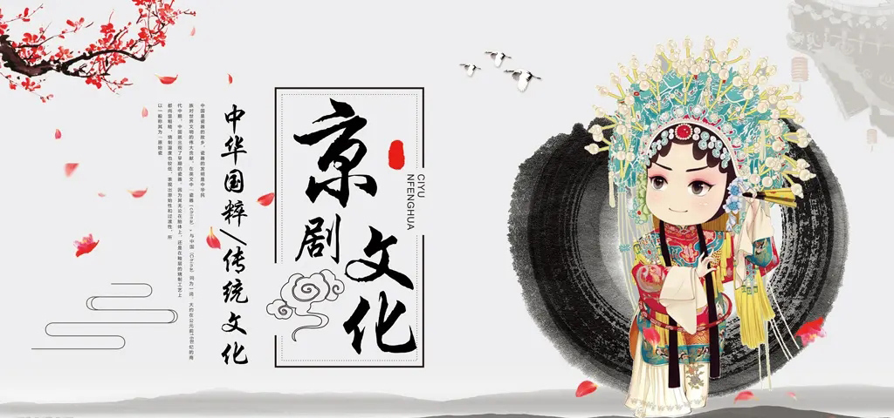
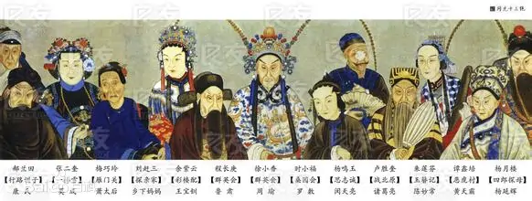
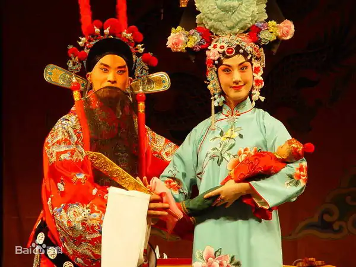
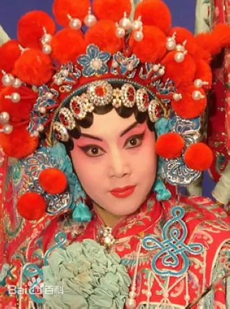
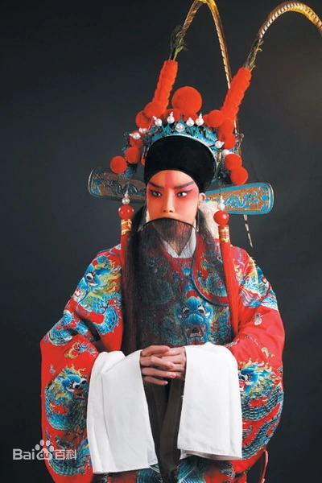
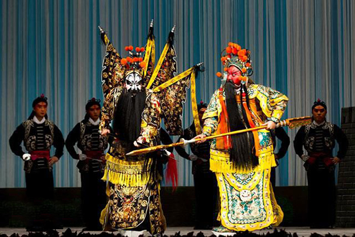

京剧，又称平剧、京戏等，中国国粹之一，是中国影响最大的戏曲剧种，分布地以北京为中心，遍及全国各地。 清代乾隆五十五年（1790年）起，原在南方演出的三庆、四喜、春台、和春 等多以安徽籍艺人为主的四大徽班陆续进入北京，与来自湖北的汉调艺人合作，同时接受了昆曲、秦腔的部分剧目、曲调和表演方法，又吸收了一些地方民间曲调，通过不断的交流、融合，最终形成京剧。 京剧在文学、表演、音乐、舞台美术等各个方面都有一套规范化的艺术表现形式。京剧的唱腔属板式变化体，以二簧、西皮为主要声腔。京剧伴奏分文场和武场两大类，文场以胡琴为主奏乐器，武场以鼓板为主。京剧的角色分为生、旦、净、丑、杂、武、流等行当，后三行已不再立专行。各行当都有一套表演程式，唱念做打的技艺各具特色。京剧以历史故事为主要演出内容，传统剧目约有一千三百多个，常演的在三四百个以上。 京剧流播全国，影响甚广，有“国剧”之称。以梅兰芳命名的京剧表演体系被视为东方戏剧表演体系的代表，为世界三大表演体系之一。京剧是中华民族传统文化的重要表现形式，其中的多种艺术元素被用作中国传统文化的象征符号。



京剧继承了皮簧戏的艺术成就及其丰富的剧目。不但有二簧、西皮、吹腔、四平调、拨子等属于二簧系统的剧目。中华人民共和国成立后，经过戏曲工作者和广大戏曲演员相互合作，共同进行整理修改，其中优秀的剧目作为民族文化艺术遗产列入中国新文化艺术林苑而被保留下来，继续在舞台上广泛流传。这类剧目据估计大约有200 余出，例如《宇宙锋》《玉堂春》《长坂坡》《群英会》《打渔杀家》《五人义》《挑滑车》《打金枝》《拾玉镯》《三击掌》《六月雪》《四进士》《搜孤救孤》《秦香莲》《打严嵩》《挡马》《金玉奴》《樊江关》《野猪林》《八大锤》《空城计》《霸王别姬》《智取威虎山》等，其题材和表现形式是多种多样的，有文戏、武戏、唱功戏、做功戏、对儿戏、群戏、折子戏、本戏等。各种形式的剧目，统称为传统戏。

“四功五法”：戏曲演员“唱念做打”四种表演功夫和“手眼身法步”（一说“口手眼身步”）五种技术方法的合称。这是戏曲演员的基本修养。